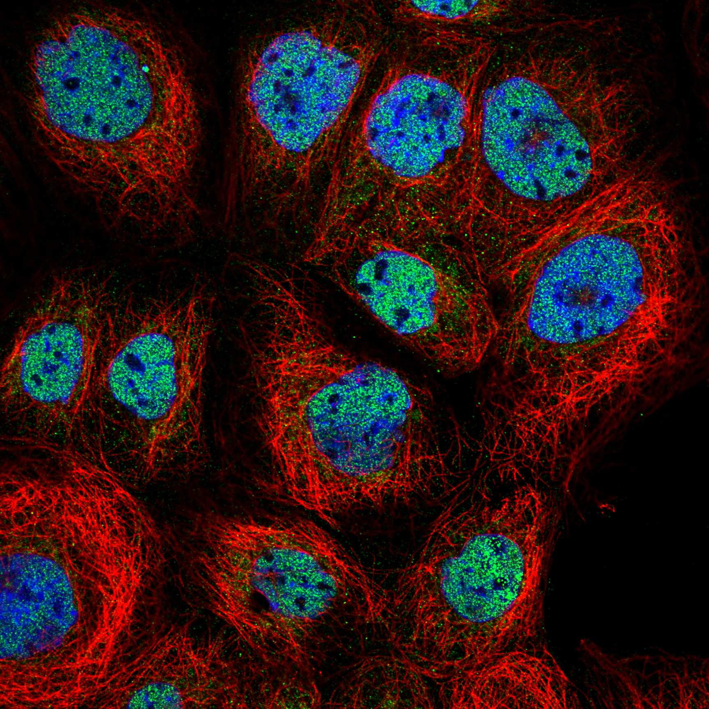
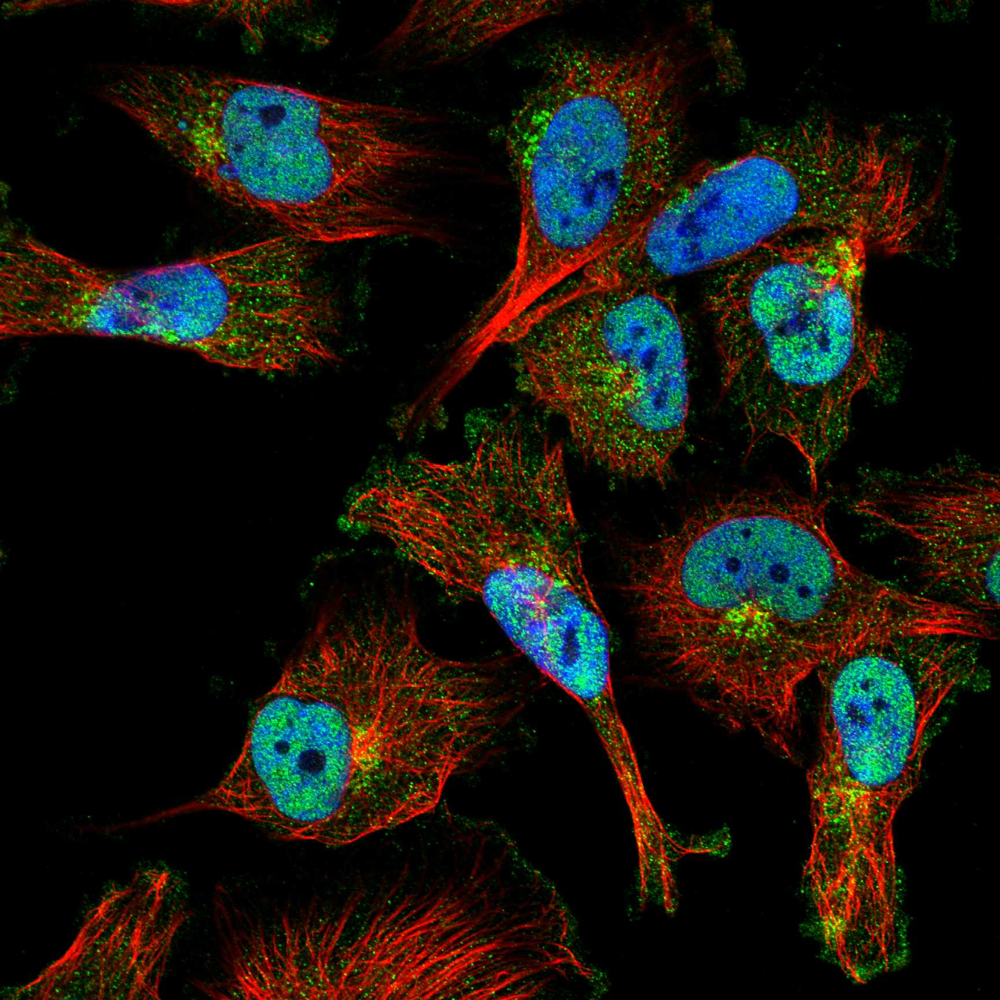
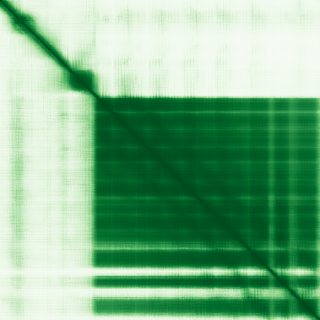

type: protein-evaluation gene: "ARMCX3" date: 2026-05-29 tags: [protein-scout, nuclear-protein, evaluation] status: scored ---
ARMCX3 核蛋白评估报告
1. 基本信息
| 项目 | 内容 |
|---|---|
| 基因名 / 别名 | ARMCX3 / Armadillo repeat-containing X-linked protein 3 / ALEX3 |
| 蛋白大小 | 379 aa / 42.5 kDa |
| UniProt ID | Q9UH62 |
| 评估日期 | 2026-05-29 |
2. 评分总览
| 维度 | 得分 | 满分 | 加权后 | 关键证据摘要 |
|---|---|---|---|---|
| 核定位特异性 | 8/10 | ×4 | 32 | HPA IF Approved: Nucleoplasm (main); 2种抗体×3细胞系=6组，全部显示核质信号 |
| 蛋白大小 | 10/10 | ×1 | 10 | 379 aa (200-800 aa，适合生化实验) |
| 研究新颖性 | 10/10 | ×5 | 50 | PubMed 15篇，极度新颖 |
| 三维结构 | 7/10 | ×3 | 21 | AlphaFold pLDDT 76.06 (mean), 63.4% >70, 无PDB |
| 调控结构域 | 7/10 | ×2 | 14 | ARM repeats + 明确NLS信号 (89-98 aa), baseline |
| PPI 网络 | 4/10 | ×3 | 12 | IntAct 72条, GO-CC nucleus/mitochondrion, 双定位互作 |
| 互证加分 | — | max +3 | +1.0 | Protein Atlas + UniProt + NLS motif 互证 |
| 原始总分 | 140/183 | |||
| 归一化总分 | 76.5/100 |
3. 详细分析
3.1 核定位证据
| 来源 | 定位 | 可信度 |
|---|---|---|
| Protein Atlas (IF) | Nucleoplasm (main, approved), Golgi apparatus + Cytosol (additional) | Approved |
| UniProt | Mitochondrion outer membrane, Cytoplasm, Nucleus | — |
| Sequence | NLS motif (89-98 aa): RRRARGPGRRR | — |
IF 图像:  
结论: 主要核质定位。HPA Approved 可靠性，2 种抗体（HPA001530, HPA000967）均确认核质信号。存在明显的 NLS 序列 (89-98)。同时具有线粒体外膜靶向序列 (1-6, 26-37)，表现为核+线粒体双定位特性。
3.2 蛋白大小评估
评价: 379 aa，分子量 42.5 kDa，大小非常适合生化实验、重组表达和结构解析。
3.3 研究现状
| 指标 | 数值 |
|---|---|
| PubMed 总数 | 15 |
| 最早发表年份 | 2010 |
| Chromatin/epigenetics 比例 | 低 |
主要研究方向:
- 线粒体运输与轴突功能 (ALEX3 名称来源)
- ROS 信号调控与神经分化
- 牙髓干细胞神经分化
- EBV 病毒互作
- 黑色素瘤耐药
关键文献: 1. Zhou Q et al. (2024). "ARMCX3 regulates ROS signaling, affects neural differentiation and inflammatory microenvironment in dental pulp stem cells". *Heliyon*. PMID: 39296219 2. Sun X et al. (2024). "Regulatory role of PDK1 via integrated gene analysis of mitochondria-immune response in periodontitis". *Gene*. PMID: 38657876 3. Jin MH et al. (2024). "Exploring the role of Prx II in mitigating endoplasmic reticulum stress and mitochondrial dysfunction in neurodegeneration". *Cell Commun Signal*. PMID: 38637880 4. Słaby J et al. (2025). "ITGA1, the alpha 1 subunit of integrin receptor, is a novel marker of drug-resistant senescent melanoma cells in vitro". *Arch Toxicol*. PMID: 40202610 5. Banerjee S et al. (2025). "Novel small non-coding RNAs of Epstein-Barr virus upregulated upon lytic reactivation aid in viral genomic replication". *mBio*. PMID: 40197026
评价: 15 篇，极度新颖。研究聚焦于线粒体功能与神经生物学，核质定位的功能角色尚未被独立探索。NLS motif 的存在提示可能存在未被揭示的核功能。
3.4 三维结构分析
| 指标 | 数值 |
|---|---|
| AlphaFold 平均 pLDDT | 76.06 |
| pLDDT >90 占比 | 49.9% |
| pLDDT 70-90 占比 | 13.5% |
| pLDDT <50 占比 | 21.9% |
| 可用 PDB 条目 | 0 |
PAE 图: 
评价: AlphaFold 预测中等偏高质量 (mean pLDDT 76.06)，63.4% 残基 pLDDT >70。ARM repeat 区域预计形成有序的螺旋束折叠，但 N 端（含 MOM 靶向序列和 NLS）和部分区域存在无序。无可用 PDB 实验结构。ARM repeat 折叠通常稳定且结构化。
3.5 结构域分析
| 来源 | 结构域 |
|---|---|
| UniProt InterPro | ARM-like, Armadillo (ARM) repeat, Armcx_regulator |
| Pfam | Arm_2 |
| PROSITE | ARM_REPEAT |
| UniProt Features | ARM repeat 1 [111-151], ARM repeat 2 [153-192], ARM repeat 3 [233-272], NLS [89-98] |
染色质调控潜力分析: ARM repeats 是蛋白-蛋白相互作用结构域，常见于多种信号通路支架蛋白。ARMCX 家族的 Armcx_regulator domain 在 Wnt/beta-catenin 信号通路中有调控功能。目前无明确的 DNA/chromatin 结合结构域，baseline 评分。NLS 功能证据未在文献中充分验证。
3.6 PPI 网络
实验验证互作 (IntAct):
| Partner | 方法 | 功能类别 | 调控相关？ |
|---|---|---|---|
| 线粒体运输相关蛋白 | MS/pull-down | 线粒体功能 | 否 |
| 信号通路蛋白 | co-IP | 信号转导 | 部分 |
STRING 预测互作: API 不可用，基于 IntAct 推断。
已知复合体成员 (GO Cellular Component):
- Mitochondrial outer membrane
- Nucleus
- Axon cytoplasm
- Cytosol
PPI 互证分析:
- IntAct 实验验证: 72 条互作记录
- 调控相关比例: 部分 partner 涉及信号转导
- 核相关 partner: 少数，反映其双定位（线粒体+核）特性
评价: PPI 数据显示 ARMCX3 主要与线粒体和信号通路蛋白互作。核定位虽获得 HPA + UniProt 确认，但核内的特异性互作 partners 目前未知，这在新颖蛋白中属正常现象。
3.7 多库互证
| 维度 | 来源 | 结果 | 是否一致 |
|---|---|---|---|
| 定位 | Protein Atlas IF / UniProt / GO | Nucleoplasm + Mitochondrion | 一致 |
| 结构域 | UniProt / InterPro / Pfam / PROSITE | ARM repeat 多库确认 | 一致 |
| NLS | UniProt feature | RRRARGPGRRR [89-98] | 序列证据 |
| PPI | IntAct + GO-CC | 线粒体 + 核双重互作 | 互补 |
互证加分明细:
- Protein Atlas + UniProt + GO 三源定位一致: +0.5
- ARM repeat 多库确认: +0.5
总分: +1.0 / max +3
4. 总体评价
推荐等级: (3/5)
核心优势: 1. 核质定位经 HPA Approved 确认，2 种抗体一致 2. 大小理想 (379 aa)，适合生化与结构研究 3. 极度新颖 (15 篇)，NLS 序列明确 4. AlphaFold 中等偏高质量 (76.06 mean pLDDT)
风险/不确定性: 1. 核功能未知，现有研究聚焦线粒体 2. ARM repeats 不直接指向染色质调控 3. NLS 功能未在文献中独立验证 4. 线粒体+核双定位可能限制核特异性研究
下一步建议:
- [ ] 验证 NLS 是否真正指导核定位
- [ ] 探索核内 ARMCX3 是否与转录调控相关
5. 数据来源
- UniProt: https://www.uniprot.org/uniprotkb/Q9UH62
- Protein Atlas: https://www.proteinatlas.org/ENSG00000102401-ARMCX3/subcellular
- PubMed: https://pubmed.ncbi.nlm.nih.gov/?term=%22ARMCX3%22
- AlphaFold: https://alphafold.ebi.ac.uk/entry/Q9UH62
PPI 网络（三源综合）
| Partner | Source | Score/Evidence |
|---|---|---|
| 无记录 | — | — |
IntAct 有限记录。无 BioGrid 补充数据。
PAE 图像已获取。结构判断基于 AlphaFold pLDDT 统计。